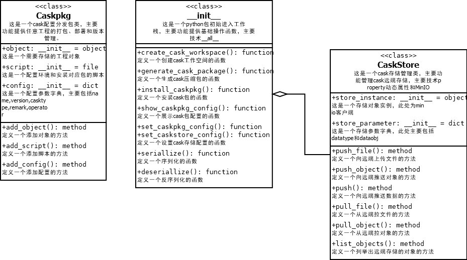

设计¶
Drip的核心概念包括信息管理、存储管理、日志管理、调度管理、特征管理、数据通道和插件管理。
Drip设计架构图¶
逻辑视图¶

物理视图¶

处理视图¶

开发视图¶
Drip核心模块设计介绍¶
信息管理：Fiche¶
设计说明¶
Fiche是一个元数据信息管理工具，主要功能提供元数据信息的管理，包括算法信息、模型信息、参数信息、应用信息和数据信息五大类信息；主要设计采用将信息卡片化，存储为一个个json字符串文档，采用主从推送模型实现观察者模式，便于信息中心化；主要技术采用MongoDB作为后端信息数据的中心存储，基于FastAPI实现的http服务使得该工具提供python-sdk的同时也与语言无关。
设计架构图¶

存储管理：Cask¶
设计说明¶
Cask是一个存储管理工具，主要功能包括项目本地打包，远端存储管理两大功能，主要设计仿制wheel文件格式，远端存储采用MinIO技术。
设计架构图¶
调度管理：Liquid¶
设计说明¶
liquid是一个pipeline工具，主要功能提供算法应用快捷组织功能，主要技术使用基于pluggy的hook技术。
设计架构图¶

日志管理：Trajectory¶
设计说明¶
Trajectory是一个日志管理工具，主要功能提供日志统一集中管理功能，主要技术基于logging提供一个mongodb的日志转发器，包括日志过滤、日志格式化功能。
设计架构图¶
数据通道：DaShare¶
设计说明¶
DaShare是一个数据服务接口包，主要功能是为底层数据向外提供了一个接口服务,可实现用户权限验证和流量限制。DaShare采用Client-Server架构设计，服务端使用HTTP协议构建数据服务的OpenAPI,暂时采用GET-method,客户端封装为python-sdk,提供python数据接口功能；用户权限采用token机制。
设计架构图¶

特征管理：Atom¶
设计说明¶
Atom是一种特征管理工具，以数据和算子作为基本概念，数据为基础数据用于训练特征和构建特征；算子为基于固定一个或多个数据集进行新特征生产的流程，可以是一个简单直接计算函数，也可以是一个复杂的算法模型，还可以是算法模型和直接计算相结合的组合体。atom的特色是对由数据衍生的算子进行了数据关联、统一管理，并直接提供了服务功能，使得每个算子可以直接实现在线实时计算特征，为主体算法模型服务，提高模型精度。
设计架构图¶